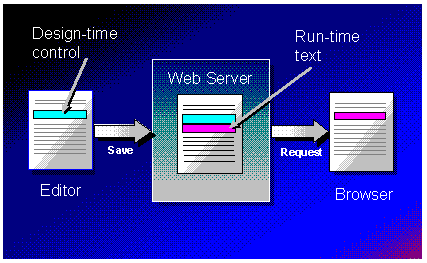

|
| ||
|
| ||
Jay Massena and Douglas Hodges
Updated: February 12, 1997
Summary
Controls are moving toward a model that lets a control called a design-time ActiveX™ control provide rich UI at design-time and target a different control for use at run-time. We see a related example of this today with Microsoft® Word. You use the full-blown Microsoft Word product when creating your document, but can get by with the much more lightweight Word Viewer when it comes to browsing the document.
Design-time controls are used by an HTML editor to author custom content into an HTML file. Design-time controls are standard ActiveX controls with a special interface that lets them generate a separate run-time implementation. They participate at design-time as all ActiveX controls do; they can handle their own drawing, accept mouse and keyboard input, provide context menus and property pages. They are a rich mechanism for extending the graphical editing environment of an HTML editor.
The key difference for design-time controls is that they are never used at run-time. Instead, design-time controls persist run-time text that is acted on by downstream text consumers like browsers and Active Server. A host container can use them extensively to provide easy authoring of Active Server Pages that contain Visual Basic® Scripting Edition (VBScript) and ActiveX server components.
Hosting design-time controls consists first of being a standard ActiveX control container and then, in addition, supporting the IActiveDesigner interface so the design-time control can persist its run-time text. Building a design-time control requires implementing the IActiveDesigner interface.
Overview
Part of the ActiveX Authoring Extensions Family
Building a Design-time Control
Test Container for Web Design-time Controls
Hosting Web Design-time Controls
ActiveX Controls
Design-time controls allow separation of design implementation and run-time implementation. In particular, design-time controls can persist one representation for design-time and an alternate representation for run-time. The design-time control persists its design-time representation within a METADATA comment using a standard HTML <OBJECT> tag. The run-time text persists below the comment and is bracketed with another comment. The run-time text targets any run-time implementation, including HTML tags, server components, java applets, Netscape plug-ins, or script.
Design-time controls leverage most of the support that an ActiveX-enabled HTML editor will already have for the standard <OBJECT> tag. Design-time controls need some additional special handling by the host. Design-time controls implement an interface called IActiveDesigner that allows the container to retrieve the run-time text of the control. This document describes the special handling a host provides for this interface. It is assumed the host already has the support for standard ActiveX controls.
Design Requirements
ActiveX Authoring Extensions are a family of components that share the same technology (interfaces) letting developers build a single component that can adapt to a wide variety of host environments. The following are part of the ActiveX Authoring Extensions family.
This is the strategic direction that Microsoft is headed to extend authoring environments. To get the ball rolling, we have implemented design-time controls targeted at Web authoring.
ActiveX Control Plus a Little Bit More
Build an ActiveX™ control, implement the IActiveDesigner interface and you have a design-time control that can persist any text you can imagine. This paper does not cover the details about building an ActiveX control. Please see the ActiveX Control section for some hints on what to do if you want to write an ActiveX control.
The Lifetime of a Web Design-time Control
The following description assumes a host that supports the <OBJECT> tag and the IActiveDesigner interface (described later in this paper).
A design-time control is created by any container that can create ActiveX controls and supports the IActiveDesigner interface.
The container persists the design-time control using IPersistPropertyBag. The run-time text of the design-time control is persisted by the container calling IActiveDesigner::SaveRuntimeState. The result is that the saved file always contains both the design-time control and the run-time text it generated at the same time.
Because the design-time control is wrapped inside an HTML comment and thus logically invisible to browsers, the file can be delivered as-is to the client browser with both the design-time control and its run-time text. If the file is processed by ActiveX Server, the design-time control is stripped from the file before processing.

Creating a Web Design-time Control
A design-time control is inserted into an HTML page in the same manner as standard ActiveX controls. The control is selected either from a toolbox or an Insert Object/Control dialog box. The control itself is then instantiated via CoCreateInstance and initialized in the standard manner.
How a Web Design-time Control Identifies Itself to a Host at Creation Time
A design-time control has two ways to identify itself at creation time. It can always be identified by a host that QI's for IActiveDesigner and then calls IActiveDesigner::QueryPersistenceInterface to see if the control supports IID_IPersistTextStream.
Alternately, the host can recognize that a given control's CLSID is a design-time control by checking to see it the control has registered the fact that it implements the special component category, CATID_WebDesigntimeControl in the registration database under the control's CLSID section.
// {73CEF3DD-AE85-11cf-A406-00AA00C00940}
DEFINE_GUID(CATID_WebDesigntimeControl,
0x73cef3dd, 0xae85, 0x11cf, 0xa4, 0x6, 0x0, 0xaa, 0x0, 0xc0, 0x9, 0x40);
Getting at Host Provided Services
Advanced controls will want to take advantage of host provided services. What services are available is up to the host. For example, Microsoft Visual InterDev™ provides the following services:
GetRuntimeText Method
Design-time controls that want to expose their run-time text programatically should implement the GetRuntimeText method.
GetRuntimeText (Tag As String) As String
Tag [in] String for passing custom value
Note: Design-time controls shipped with Visual InterDev 1.0 use an earlier method name of GetRuntimeHTML.
ServiceProvider Property
Design-time controls that want to have their ServiceProvider set programatically should expose the ServiceProvider property. For more information on services, see the Host Services document. Certain containers are able to expose the service provider via the client site and some are not. For extra coverage, it is advised that you support this property. When it is time to use the service provider interface, first check to see if it was passed into the ServiceProvider property. If it was not, then query the client site for IServiceProvider. For controls built with Microsoft Visual Basic®, you should still have the property, but there is a helper function that will do the work of getting it from the property or the client site as necessary. For information on the helper function, see Host Services document.
ServiceProvider As Variant
Note Design-time controls shipped with Visual InterDev 1.0 expose the ServiceProvider property.
Web Design-time Control Persistence Using IPersistPropertyBag
Each design-time control persists its design-time state into the text file using IPersistPropertyBag when the text file is saved. Each property is persisted as a <PARAM> tag within the <OBJECT> tag block. There is a 1024-byte limit to the string that can be assigned to the VALUE attribute of the <PARAM> tag. Design-time control developers can choose to spread a chunk of text across multiple <PARAM> tags for later reconstitution when the design-time control is reloaded.
Persistence form of a design-time control
<!--METADATA TYPE="DesignerControl" startspan
<OBJECT ID=MyPageCounter
ClassID="clsid:2FA70250-9333-11CF-8F68-00AA006D27C2">
<PARAM Name="ImageStyle" Value="Odometer">
<PARAM Name="TextColor" Value="Yellow">
</OBJECT>
-->
<% Set MyPageCounter = Server.CreateObject("XYZ.PageCounter")
MyPageCounter.ImageStyle = 2
MyPageCounter.TextColor = Yellow
MyPageCounter.PageHits = Application("PageHits")%>
<IMG src=<%=mypagecounter.imageurl%> >
<!--METADATA TYPE="DesignerControl" endspan -->
Changes to a Web Design-time Control in the Text File
Changes to the run-time text of a design-time control using an editor on the text file will be blown away the next time the design-time control is persisted. Changes to the VALUE attribute of a <PARAM> tag will stick. If the user strips the METADATA comments and leaves the run-time text, the design-time control will not be instantiated by the ActiveX control host when the document is reloaded. If the user deletes the run-time text, it will be regenerated the next time the control is saved. If the user deletes the endspan METADATA comment, one will be implied at the end of the file.
Active Server Treatment of Web Design-time Controls
Authors who want to prevent the design-time control from being delivered to the client browser must use Active Server Pages (.asp) that will be processed by the Active Server. When the Active Server sees a METADATA comment, it will strip it from the file before processing. This leaves behind just the run-time text of the design-time control. This step occurs before any other logic so the run-time text is fully active.
<!--METADATA TYPE="DesignerControl" startspan
<OBJECT ID=MyPageCounter
ClassID="clsid:2FA70250-9333-11CF-8F68-00AA006D27C2">
<PARAM Name="ImageStyle" Value="Odometer">
<PARAM Name="TextColor" Value="Yellow">
</OBJECT>
-->
<% Set MyPageCounter = Server.CreateObject("XYZ.PageCounter")
MyPageCounter.ImageStyle = 2
MyPageCounter.TextColor = Yellow
MyPageCounter.PageHits = Application("PageHits")%>
<IMG src=<%=mypagecounter.imageurl%> >
<!--METADATA TYPE="DesignerControl" endspan -->
<% Set MyPageCounter = Server.CreateObject("XYZ.PageCounter")
MyPageCounter.ImageStyle = 2
MyPageCounter.TextColor = Yellow
MyPageCounter.PageHits = Application("PageHits")%>
<IMG src=<%=mypagecounter.imageurl%> >
Registering a Web Design-time Control
Design-time controls are registered the same way as any other ActiveX control. Additionally, design-time controls can declare their identity by registering that they implement the special component category CATID_WebDesigntimeControl in the registration database under the control's CLSID section. For more information on component categories, see the Component Categories specification in the ActiveX Development Kit.
// {73CEF3DD-AE85-11cf-A406-00AA00C00940}
DEFINE_GUID(CATID_WebDesigntimeControl,
0x73cef3dd, 0xae85, 0x11cf, 0xa4, 0x6, 0x0, 0xaa, 0x0, 0xc0, 0x9, 0x40);
Visual Basic 5.0 does not provide a way to write code that runs when a control is registered, so there is no way to automatically register CATID_WebDesigntimeControl. Until it does, we have included a program called Regsvrdc.exe that takes a CLSID or progid for a design-time control and handles the registration. This console program is run from the command line and behave just like regsvr32.exe. If your setup program supports it, you should execute regsvrdc at setup time using the silent flag for each design-time control you are installing.
The source code for regsvrdc.exe is included as an MFC example of how to handle component category registration.
Description
Registers one or more controls as Design-time Controls.
REGSVRDC [/U] [/S] control [+ control]
| Control | Specifies the control(s) to register as Design-time Control(s). Each control is specified by a valid CLSID or ProgID. |
| /U | Unregisters the control(s) as Design-time Control(s). |
| /S | Silent. Outputs no messages. |
Example
Regsvrdc webdtc.datagrid
Features
The Design-time Control SDK includes a test container for design-time controls. The test container is a special version of the Microsoft® ActiveX™ Control Pad 1.0 that supports the IActiveDesigner interface.
Benefits of Hosting Web Design-time Controls
Design-time controls leverage the host's investment in ActiveX™ controls making them relatively inexpensive to support. Hosting design-time controls lets third party control developers extend the host's functionality beyond its intrinsic feature set. For example, a control developer could write a design-time control that creates HTML 3.2 tables even though the host does not specifically support them.
Assumed Host Functionality
This proposal documents a persistence format for design-time controls. This format permits a design-time control to store in the text file the information for instantiation at design time and the run-time text that can be directly read at browse time. This format is entirely compatible with Microsoft FrontPage™ WebBots™.
The design-time control is represented by an <OBJECT> tag and is stored in the HTML file within a special METADATA HTML comment:
<!--METADATA TYPE="DesignerControl" startspan [attrib1, attrib2…attribN] <OBJECT> ..... </OBJECT> --> <H1>Hello World</H1> <!--METADATA TYPE="DesignerControl" endspan [attrib1, attrib2…attribN] -->
The run-time text is stored in the same HTML file just after the startspan METADATA comment and is followed by a comment that contains the endspan attribute.
There is no space between <!-- and METADATA.
Upper/lower case are not meaningful.
Additional attributes in the METADATA comment are generated by the container and are optional. They consist of name/value pairs and for the design-time control METADATA comment, are all on the first line (no line-feed/carriage return).
Design Time
At load-time, METADATA comments with TYPE="DesignerControl" are recognized as a special comment. If the startspan attribute is present, the first line of the comment is skipped and the following element is the <OBJECT> tag. The <OBJECT> tag is recognized and parsed and the object element is instantiated in Trident. Everything which follows </OBJECT> is read by the parser and skipped until a METADATA comment with TYPE="DesignerControl" and the endspan attribute is found. This means that the run-time text is not parsed by the editor at load-time.
Any optional attributes following the startspan attribute are not preserved by the editor.
The save command QI's for the IActiveDesigner interface to determine if the object is a design-time control. If present…
When an HTML file is sent to a browser, the Browser will skip the METADATA comments and display the run-time text. The <OBJECT> tag is not instantiated because it is masked inside a comment.
Inserting a Web Design-time Control into a Host
A design-time control is inserted into a page in the same manner as standard controls. The control is selected either from a toolbox or an Insert Object/Control dialog box. The control itself is then instantiated via CoCreateInstance and initialized in the standard manner. A container can recognize that a given control CLSID is a design-time control by checking to see if the control has registered the fact that it implements the special component category, CATID_WebDesigntimeControl in the registration database under the control's CLSID section.
// {73CEF3DD-AE85-11cf-A406-00AA00C00940}
DEFINE_GUID(CATID_WebDesigntimeControl,
0x73cef3dd, 0xae85, 0x11cf, 0xa4, 0x6, 0x0, 0xaa, 0x0, 0xc0, 0x9, 0x40);
Persistence of a Web Design-time Control
The HTML container should persist each design-time control into the HTML file using IPersistPropertyBag.
Example of persisted design-time control
<!--METADATA TYPE="DesignerControl" startspan
<OBJECT ID=MyPageCounter
ClassID="clsid:2FA70250-9333-11CF-8F68-00AA006D27C2">
<PARAM Name="ImageStyle" Value="Odometer">
<PARAM Name="TextColor" Value="Yellow">
</OBJECT>
-->
Persistence of a Web Design-time Control's Run-time Text
The run-time text of a design-time control is retrieved by the container using the IActiveDesigner interface implemented by the control. A design-time control persists its run-time text via the IActiveDesigner::SaveRuntimeState method. This method is general; it allows for many types of design-time ActiveX controls that persist their state via any OLE persistence medium. Design-time controls respond to IActiveDesigner::SaveRuntimeState using the IID_IPersistTextStream persistence format. The run-time text is written into an IStream medium. The text written to the IStream must be UNICODE.
The following pseudo code demonstrates how the container saves the run-time text of a design-time control:
HRESULT SaveRuntimeText(IActiveDesigner *pActiveDesigner, ...)
{
HRESULT hr;
BOOL fSupported;
HGLOBAL hGlobal = NULL;
Istream *pStream = NULL;
OLECHAR *pstr;
pActiveDesigner->QueryPersistenceInterface(
IID_IPersistTextStream, &fSupported );
if ( !fSupported )
return S_OK; // Control has no run-time text to be saved
hGlobal = GlobalAlloc( GMEM_MOVEABLE | GMEM_NODISCARD, 0 );
if ( !hGlobal )
goto ErrRtn;
hr = CreateStreamOnHGlobal( hGlobal, FALSE, &pStream );
if ( FAILED(hr) )
goto ErrRtn;
hr = pActiveDesigner->SaveRuntimeState(
IID_IPersistHTMLStream, IID_IStream, pStream );
if ( FAILED(hr) )
goto ErrRtn;
pstr = (OLECHAR *)GlobalLock( hGlobal );
if ( !pstr )
goto ErrRtn;
// write run-time text out here...
GlobalUnlock( hGlobal );
ErrRtn:
if ( pStream )
pStream->Release();
if ( hGlobal )
GlobalFree( hGlobal );
return S_OK;
}
The run-time text is the final deliverable for a design-time control. Any arbitrary text is valid. This is not used in any way by the design-time control container.
The container should always refresh the run-time text whenever a design-time control is saved.
Example of design-time control's run-time text
<!--METADATA TYPE="DesignerControl" startspan
<OBJECT ID=MyPageCounter
ClassID="clsid:2FA70250-9333-11CF-8F68-00AA006D27C2">
<PARAM Name="ImageStyle" Value="Odometer">
<PARAM Name="TextColor" Value="Yellow">
</OBJECT>
-->
<% Set MyPageCounter = Server.CreateObject("XYZ.PageCounter")
MyPageCounter.ImageStyle = 2
MyPageCounter.TextColor = Yellow
MyPageCounter.PageHits = Application("PageHits")%>
<IMG src=<%=mypagecounter.imageurl%> >
<!--METADATA TYPE="DesignerControl" endspan -->
Deleting a Web Design-time Control
Deleting a design-time control will remove only the selected control from the text stream.
Changes to a Web Design-time Control in the Text File
Changes to the run-time text of a design-time control using an editor on the text file will be blown away the next time the design-time control is persisted. Changes to the VALUE attribute of a <PARAM> tag will stick. If the user strips the METADATA comments and leaves the run-time text, the design-time control will not be instantiated by the ActiveX control host when the document is reloaded. If the user deletes the run-time text, it will be regenerated the next time the control is saved. If the user deletes the endspan METADATA comment, one will be implied at the end of the file.
Managing the Name of a Web Design-time Control
Many design-time controls will incorporate their programming name (as given by the control container) in their run-time text, as part of their display presentation, or in other ways. For an HTML file, the interesting name for an object is the name that is persisted as the ID attribute of the <OBJECT> tag. Users need to be able to modify the name of the design-time control to make it something meaningful to the user. This will normally be done via a property sheet (either a Property Page or the All Page). The design-time control needs to be notified when the x-object property used to name a control is modified (typically called ID or Name). This then gives the control an opportunity to update things it manages as necessary. The container needs to enforce that the name is unique per normal HTML rules. The container needs to notify the design-time control when its programming name changes. This is done by supporting the DISPID_AMBIENT_DISPLAYNAME ambient property and keeping its value in sync with the ID attribute of the OBJECT tag. When the name is changed, the container should call IOleControl::OnAmbientChange.
The default name for a design-time control should be meaningful to the user based on the control type. As a root for the name, the container can use the coclass name specified in the control's TypeInfo; else if the control has a ShortUserType name, then it can be used.
Test Controls for Hosts of Web Design-time Controls
The Design-time Control SDK contains several design-time controls that can be used for testing. The controls support the IActiveDesigner interface.
IActiveDesigner Interface
ActiveX™ controls that want to function as design-time controls must implement the IActiveDesigner interface which includes the following methods.
Returns the CLSID of the run-time object corresponding to the design-time ActiveX control. Design-time controls do not have a run-time object, instead they give text as their run-time representation.
HRESULT IActiveDesigner::GetRuntimeClassID(CLSID *pclsid)
{
*pclsid = CLSID_NULL;
return S_FALSE;
}
Return MiscStatus flags for the run-time object. These should be the same flags that the run-time object would return from IOleObject::GetMiscStatus. Design-time controls do not have a run-time object, so NULL is returned for the flags.
HRESULT IActiveDesigner::GetRuntimeMiscStatusFlags(DWORD *pdwMiscFlags)
{
if (!pdwMiscFlags)
return E_INVALIDARG
*pdwMiscFlags = NULL;
return E_UNEXPECTED;
}
Returns TRUE or FALSE if a particular run-time persistence interface is supported. Design-time controls return text as their run-time persistence. As such, they support IPersistTextStream persistence into an IStream medium.
HRESULT IActiveDesigner::QueryPersistenceInterface(REFIID riid)
{
if (riid == IID_IPersistTextStream)
return S_OK;
return S_FALSE;
}
Saves the run-time persistence interface for the design-time ActiveX control via a supported persistence interface. Design-time controls return text as their run-time persistence. As such, they support writing text via IPersistTextStream persistence into an IStream medium.
HRESULT IActiveDesigner::SaveRuntimeState
(
REFIID riidPersist,
REFIID riidObjStgMed,
void *pObjStgMed
)
{
HRESULT hr;
BSTR bstrHtml;
if ((riidPersist != IID_IPersistTextStream) ||
(riidObjStgMed != IID_IStream))
return E_NOINTERFACE;
// Call your internal routine to generate runtime text
hr = this->GetRuntimeText(&bstrText);
if (SUCCEEDED(hr))
{
hr = ((IStream *)pObjStgMed)->Write(bstrText, SysStringByteLen(bstrText) + sizeof(OLECHAR), NULL);
SysFreeString(bstrText);
}
return hr;
}
Return the OLE Automation interface for the design-time ActiveX control that should be exposed via the design-time tools OLE Automation object model.
HRESULT IActiveDesigner::GetExtensibilityObject(IDispatch **ppvObjOut)
{
if (!ppvObjOut)
return E_INVALIDARG
return this->QueryInterface(IID_IDispatch, ppvObjOut);
}
IActiveDesigner Interface Definition
///////////////////////////////////////////////////////////////////////////
// IActiveDesigner
//
// {51AAE3E0-7486-11cf-A0C2-00AA0062BE57}
DEFINE_GUID(IID_IActiveDesigner, 0x51aae3e0, 0x7486, 0x11cf, 0xa0, 0xc2, 0x0, 0xaa, 0x0, 0x62, 0xbe, 0x57);
// {56223fe3-d397-11cf-a42e-00aa00C00940}
DEFINE_GUID(IID_IPersistTextStream, 0x56223fe3, 0xd397, 0x11cf, 0xa4, 0x2e, 0x0, 0xaa, 0x0, 0xc0, 0x9, 0x40);
#undef INTERFACE
#define INTERFACE IActiveDesigner
DECLARE_INTERFACE_(IActiveDesigner, IUnknown)
{
// IUnknown methods
//
STDMETHOD(QueryInterface)(THIS_ REFIID riid, LPVOID FAR* ppvObj) PURE;
STDMETHOD_(ULONG,AddRef)(THIS) PURE;
STDMETHOD_(ULONG,Release)(THIS) PURE;
// IActiveDesigner methods
//
STDMETHOD(GetRuntimeClassID)(THIS_ CLSID *pclsid) PURE;
STDMETHOD(GetRuntimeMiscStatusFlags)(THIS_ DWORD *dwMiscFlags) PURE;
STDMETHOD(QueryPersistenceInterface)(THIS_ REFIID riidPersist) PURE;
STDMETHOD(SaveRuntimeState)(THIS_ REFIID riidPersist, REFIID riidObjStgMed, void *pObjStgMed) PURE;
STDMETHOD(GetExtensibilityObject)(THIS_ IDispatch **ppvObjOut) PURE;
};
What is an "ActiveX Control"?
ActiveX controls, formerly known as OLE controls or OCX controls, are components (or objects) you can insert into a Web page or other application to reuse packaged functionality someone else programmed. For example, the ActiveX controls that are included with Microsoft Internet Explorer version 3.0 allow you to enhance your Web pages with sophisticated formatting features and animation.
A key advantage of ActiveX controls over Java applets and Netscape™ plug-ins is that ActiveX controls can also be used in applications written in many programming languages, including all of the Microsoft programming and database languages.
There are hundreds of ActiveX controls today with functionality ranging from a timer control (which simply notifies its container at a particular time) to full-featured spreadsheets and word processors. If you can imagine it, you can do it with an ActiveX control.
You can add ActiveX controls to your Web pages by using the standard HTML <OBJECT> tag. The object tag includes a set of parameters that you use to specify which data the control should use and to control the appearance and behavior of the control.
Microsoft Internet Explorer version 3.0 Alpha comes with a small set of ActiveX controls that it uses. With these controls, you can:
The ActiveX controls that are provided with Internet Explorer 3.0 are installed automatically when the user installs Internet Explorer 3.0. Once installed, ActiveX controls run automatically when a Web page containing them is displayed - users do not need to download any additional files.
If you are a Web author, you can take advantage of the ready-to-use ActiveX controls listed below. If you are a programmer, you can write your own controls using Microsoft Visual C++® and one of the ActiveX control frameworks: the Microsoft Foundation Class Library (MFC), the ActiveX Template Library (ATL), or the BaseCtl framework.
How to Start Writing an ActiveX Control
ActiveX controls are OLE controls that have been extended for the Internet environment. The specs listed below provide background information on ActiveX controls and some preliminary information on writing controls. For copies of these specs, download the Microsoft ActiveX Development Kit and install it on your system. Most of these documents are also available in full-text searchable format on the Microsoft ActiveX SDK CD-ROM, available from the Microsoft® Developer Network.
OLE Controls/COM Objects for the Internet
Extensions for OLE controls that will enable them to work well in the Internet environment (that is, when inserted into Web pages).
OLE Controls 96
Enhancements to OLE controls, including information on windowless, transparent, and irregularly shaped controls. Also provides information on performance enhancements.
OLE Control and Control Container Guidelines, Version 2.0
General guidelines for creating OLE controls and control containers.
Palette Behavior for OLE Controls
Palette behavior and management guidelines for implementing OLE controls and control containers. This spec also describes the behavior of Internet Explorer 3.0 as an OLE control container.
Component Categories
Categorization of COM objects based on the interfaces they support.
Internet Component Download
Mechanism Internet Explorer 3.0 uses to automatically download control code.
1. The easiest is to use the OLE control development facilities built into Visual C++ and MFC. This technology allows you to create control executables that are pretty small (so they download faster); however, it requires the correct MFC dynamic link library (DLL) to be installed on the user's system. This DLL is quite large -- nearly a megabyte. But even so, it needs to be installed only once on each user's system and shouldn't take more than 10 minutes or so to download, even at 14.4 Kbps. Microsoft is working to make these controls and their associated DLLs even smaller and more efficient, so controls you write using MFC today will be even faster in the future.
2. The Microsoft Internet Explorer developers included a sample called BaseCtl in the ActiveX Development Kit. This sample comprises the FrameWrk, ToDoSvr, and WebImage examples. Writing your controls in this style gives you the smallest possible controls; however, it also requires intimate knowledge of OLE COM and ActiveX control architecture -- so it's not for the faint-of-heart.
3. Finally, the Visual C++ team has created the ActiveX Template Library (ATL), which includes the library plus the Beeper and Labrador samples. This is a library of C++ templates that allows you to create very fast and small controls -- in fact, you can even avoid linking in the C run-time library. The templates also do some of the grunge work of OLE for you, but they still require a pretty intimate knowledge of COM and ActiveX control architecture -- so they're for those who aren't timid, but who'd like to have some of the tedious OLE work done for them.
Did you find this material useful? Gripes? Compliments? Suggestions for other articles? Write us!
© 1999 Microsoft Corporation. All rights reserved. Terms of use.